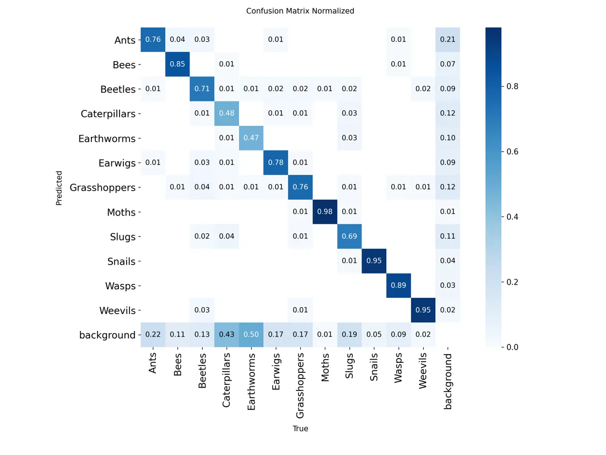
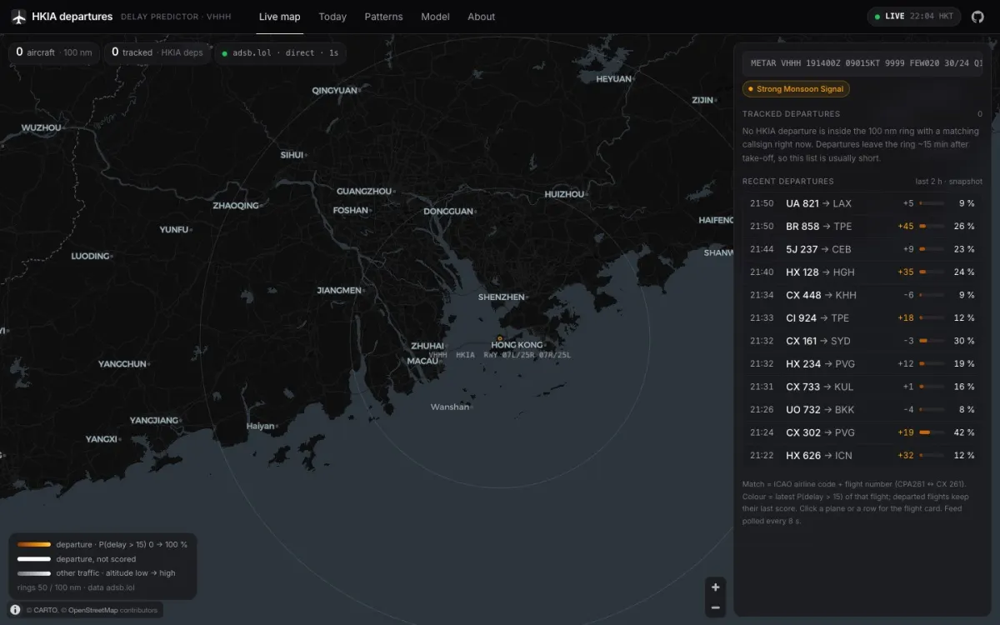

The week my model tied a lookup table
I built an XGBoost model for flight delays, graded it in public, and found it only half beat a table of historical averages.
Read the story
| Flight | To | Scheduled (HKT) | Chance of leaving over 15 min late |
|---|---|---|---|
| CX 253 | London | 13:30 | 34% |
| CX 870 | San Fran | 13:30 | 26% |
| CX 360 | Shanghai | 13:35 | 27% |
| NH 860 | Tokyo | 14:20 | 13% |
| CX 751 | Bangkok | 14:30 | 24% |
| CX 635 | Singapore | 15:05 | 17% |
Live from my HKIA delay model — every prediction is graded in public →
The percentage is the model’s chance a flight leaves more than 15 minutes late. Snapshot, 5 Nov 2026.
I build machine-learning systems and then grade them in public. The one I am proudest of predicts delays at Hong Kong’s airport, waits for each plane to leave, and marks its own homework — the board is live. Right now I am an AI engineering intern at CarryAI, cutting false alarms from a vision-language safety monitor.
HKUST · CarryAI · Hong Kong
Currently: building [TBC: current side project], reading [TBC: a book or paper].
The parts of the work that don’t fit on a CV: what went wrong, what I got wrong, and what I would check next time.
I built an XGBoost model for flight delays, graded it in public, and found it only half beat a table of historical averages.
Read the story
Aviation, three languages and a badminton court: the things that are not on my CV.
Read the story

Same model, same prices, same engine. Only the labels changed: +11.9% became +1.6%.
Read the story

My exchange project: which architecture is best at telling a weevil from a wasp, and where all of them fail.
Read the story

A live number fell from 0.718 to 0.621 after a refit. Whether to roll back depended on which flights I compared.
Read the story
False alarms are what make people stop listening to a monitor. What took ours from 181 to 4.
Read the story
Four projects I would happily be quizzed on. Source for each is on GitHub.
A live ML service. Every prediction is scored against the actual departure.
An end-to-end delay-prediction service for Hong Kong International Airport, built on three public data feeds: 38 point-in-time features — rolling airline and airport delay statistics, as-of METAR weather joins, typhoon signals — feed XGBoost trained on a date-ordered split, reaching AUC 0.693 and a 15.7-minute MAE on a held-out 6,580-flight test set. A scheduled GitHub Actions pipeline publishes predictions and a self-grading loop scores each one once the flight departs; scores export as static JSON, so the React + deck.gl dashboard is served entirely from static hosting.
Right now: live AUC 0.669 against 0.620 for a plain airline×hour lookup, over 2,951 graded predictions (22–29 Oct 2026). Rolling 7-day window; snapshot 29 Oct 2026
Live dashboard Source on GitHub The story behind it
Python, XGBoost, pandas, GitHub Actions, React, deck.gl
A data-contamination study: does the agent forecast, or remember?
A no-lookahead, event-driven backtester — decisions at close t, fills at open t+1, 15 bps per side (30 bps round-trip) costs — replaying an LLM trading agent over fifteen US large-caps (2019–2026) against classical strategies. The agent turns out to be a high-turnover momentum chaser that trails simple equal-weight rebalancing risk-adjusted (1.04 vs 1.23 Sharpe) after a 3.5 pp/yr cost drag at 9.4× annual turnover. A controlled A/B — identical engine, prices and seed, real tickers versus anonymised labels — isolates data contamination: in 2022 the real-ticker arm returned +11.9% against +1.6% anonymised, and also cited sector vocabulary never supplied in the prompt. 107 offline tests and a committed prompt cache replay every number for $0.
Python, pandas, LLM APIs, pytest
Six architectures, head to head. ViT 93.4% accuracy; YOLOv11 .825 mAP@0.5.
Six deep-learning architectures — three detectors and three classifiers — trained and evaluated head-to-head on the Kaggle crop pest dataset, with an end-to-end pipeline covering YOLO-to-COCO conversion, early stopping, explainability visualisations, and a deliberately imbalanced split to test robustness. Completed on exchange at UNSW Sydney. In the matrix, moths, snails and weevils resolve cleanly; caterpillars and earthworms are the hard classes, and most of their error is confusion with background rather than with each other.
PyTorch, ViT, YOLOv11, Faster R-CNN, EfficientDet, ConvNeXt, EfficientNet
The ordinary domain, built the careful way.
169 tests — 98 unit and 71 integration, the integration suite running against a real PostgreSQL container rather than an in-memory stand-in — over a schema managed entirely by Flyway migrations, with JWT authentication and role-based access across three user types. Started as a six-person team project and was substantially reworked afterwards. The domain is an ordinary one: catalogue, borrowing, reservations and fines.
Java 17, Spring Boot, Spring Security, PostgreSQL, Flyway, Testcontainers, React 18, Vite, Docker
Two internships, one exchange semester and a degree in progress.
CarryAI Company Limited, Hong Kong
University of New South Wales, Sydney
Total Rehabilitation Management (TRM HK), Hong Kong
HKUST Department of Computer Science and Engineering
HKUST Counselling and Wellness Centre
Hong Kong University of Science and Technology
Languages: Python, TypeScript, JavaScript, C++, Java, C#, C, SQL, Bash.
ML and data: PyTorch, TensorFlow, XGBoost, scikit-learn, pandas, NumPy, SHAP, YOLO, MLX.
Web and infra: React, Vite, Streamlit, FastAPI, pytest, vitest, Docker, AWS, GitHub Actions, Git, PostgreSQL, MongoDB.
Spoken: English and Bahasa Indonesia (native), Mandarin (HSK 4).
I am looking for software engineering internships and graduate roles for 2027, and I am always glad to talk about backend systems, computer vision, or anything aviation-adjacent. If a story above made you want to argue with me, even better.